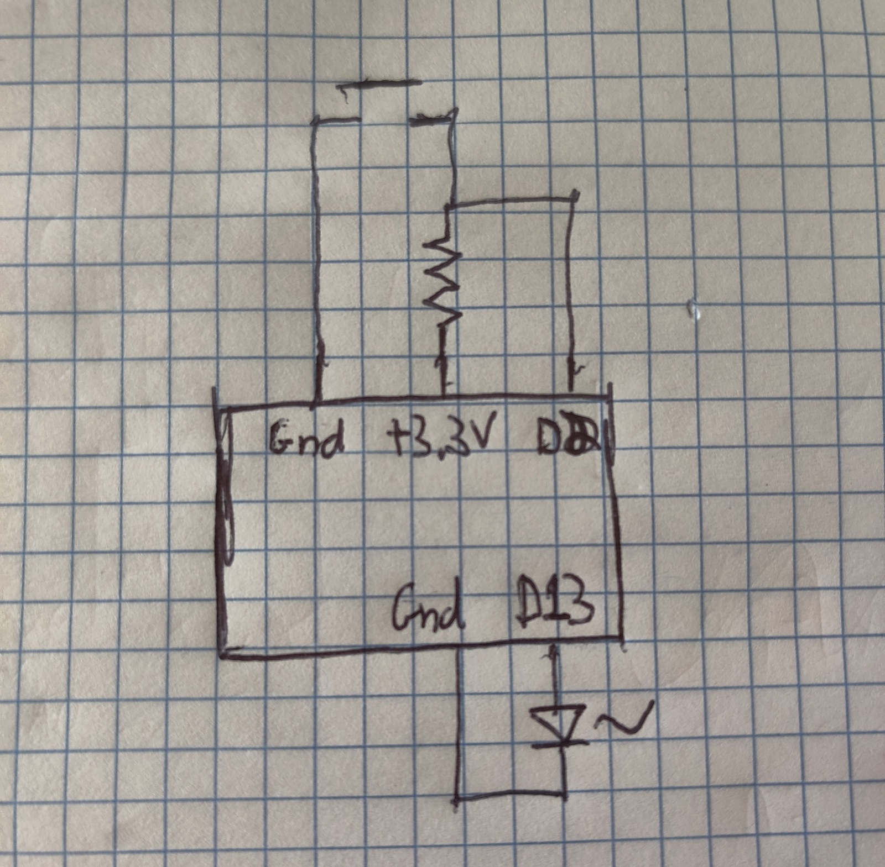
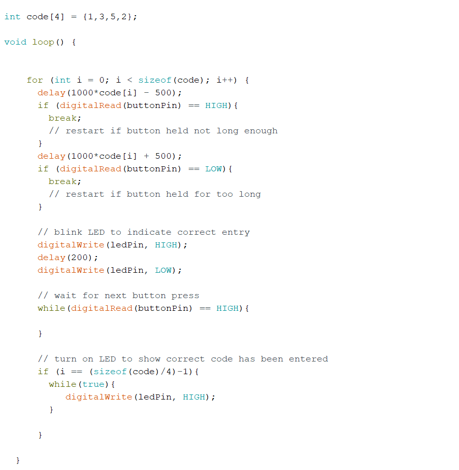

This week we explore programmable electronics, and arduino programming more in-depth. For this weeks project I decided to make a single button combination lock, that works by unlocking when a correct timed sequence is inputted. For example, if the unlock code is 1-3-5-2, then you must press the button for one second, release, then three seconds, release, five, release, 2, release and then the lock is opened (likely lighting up an LED).
I began by assembling the circuit necessary for this project. Specifically, I decided to use a pull up resistor with a push button, with the digital read pin connected after the resistor, making it go LOW when the button is pressed, and HIGH when the button is open. I also used the onboard red LED on pin 13 to simplify the circuit, which will be our visual output. The sketched out circuit is shown on the left, and the assembled circuit is on the right. The leads to the push button were too thick to fit into the prototype board, so I ended up snipping them short so they would fit nicely.
I first tested all the parts of the circuit, making sure the button output is correct by using Serial output, and then also testing that the LED on pin 13 could be controlled. After confirming this, I moved on to the code for the project.
I decided to use a for loop which would iterate through an array containing the unlock code. Since nobody can press a button for exactly X second, I had to create some leeway for users, such that you have to press the button within 500 milliseconds of the target length. If the button press length is within the target range, the code blinks the LED to indicate correct input and moves waits for the next button press. If the button press length is too short or too long, an if statement causes a break, and we exit the for loop, restarting the input for the code.
The commented code for the device is shown on the left, and a gif of it functioning is shown below. In the clif, the combination is 1-3-5-2, and you can see me pressing it for that duration in seconds in that order. If any of the inputs are too far off from the target length, the circuit resets. If the combiation is entered correctly, the microcontroller goes into a while(true) loop and turns on the LED to indicate completion.
For my final Project, I plan to modify existing electronic spray bottles. For this I would likely need soldering equiptment to bypass and control the switch that triggers it, which I need to find a way to access.
Additionally, ideally I would have some 3d printed container that holds all the nozzles and bottles of smell fluid, making the design more clean and easier to move around.